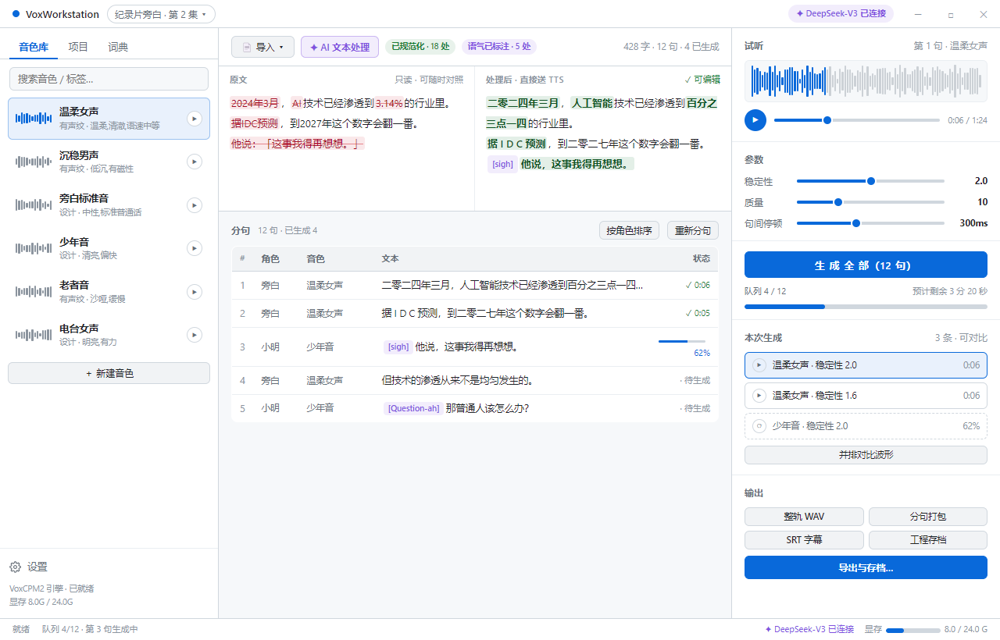
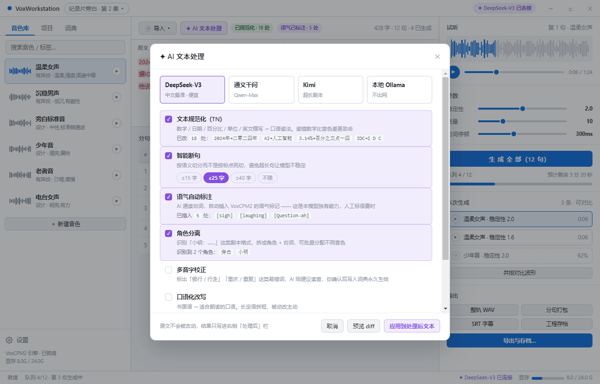
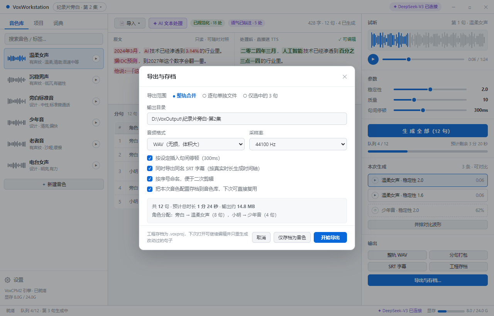

TTS 模型本身只解决"把字念出来"。但成品质量的大头在送进去之前：
2024年3月 念成"二千零二十四年三月"而不是"二零二四年三月"3.14% 念成"三点一四百分号"而不是"百分之三点一四"AI 该念"A I"还是"人工智能" · IDC 该念字母还是全称读错一个数字，比音色差十倍更毁成品。而 VoxCPM2 还独有 [laughing]
[sigh] 这类语气标记 —— 让 LLM 通读台词自动标注，人工标一遍是很痛苦的。
原文永不改动，AI 结果只写进右栏，逐处改动用颜色标出（红删绿增）。 你可以只接受一部分、手动再改。这比"一键替换然后就找不回来了"可靠得多。



★ = 我强烈建议做 · ○ = 锦上添花，可以后加
| 编号 | 功能 | 建议 |
|---|---|---|
| A1 | 粘贴 / 拖入 txt | ★ 必做 |
| A2 | 导入 SRT / VTT 字幕（保留时间轴）配音常用 | ★ |
| A3 | 导入 Word / PDF 提取文本 | ○ |
| A4 | 图片 / 截图 OCR 取字 | ○ |
| A5 | 从剪贴板一键识别 | ○ |
| 编号 | 功能 | 建议 |
|---|---|---|
| B1 | 文本规范化 TN：数字/日期/百分比/单位/英文缩写 → 口语读法 | ★ 必做 |
| B2 | 智能断句：按语义切分，可设目标句长 | ★ 必做 |
| B3 | 语气自动标注：自动插入 [laughing] 等 VoxCPM2 标记 | ★ 必做 |
| B4 | 角色分离：识别「小明：…」拆角色，批量分配音色 | ★ |
| B5 | 多音字校正：标出易错词，确认后写入词典永久生效 | ★ |
| B6 | 口语化改写：书面语 → 适合朗读 | ○ |
| B7 | 翻译后配音（中↔英） | ○ |
| B8 | 术语一致性检查（人名/专名全文统一） | ○ |
| B9 | 错别字 / 敏感词检查 | ○ |
| 编号 | 功能 | 建议 |
|---|---|---|
| C1 | 逐句生成 + 可见队列（GPU 串行，等待必须看得见） | ★ 必做 |
| C2 | 批量生成全部 后端已支持 | ★ 必做 |
| C3 | 单句重生成 / 只重生成失败句 | ★ |
| C4 | 多音色分角色（一个剧本多角色） | ★ |
| C5 | 句间停顿控制（前后静音 ms） | ★ |
| C6 | 同句多版本 A/B 并排对比 | ★ |
| C7 | 整轨拼接（N 句合成一条完整音轨） | ★ 必做 |
| 编号 | 功能 | 建议 |
|---|---|---|
| D1 | 整轨 WAV / MP3 / FLAC 后端有 ffmpeg 工具 | ★ 必做 |
| D2 | 逐句单独文件（按序号命名，便于剪辑） | ★ |
| D3 | 导出 SRT 字幕（按真实时长生成时间轴） | ★ |
| D4 | 工程存档 .voxproj，下次打开只重生成改动过的句子 | ★ |
| D5 | 复制音频到剪贴板 | ○ |
| 编号 | 功能 | 建议 |
|---|---|---|
| E1 | 音色管理 + 波形缩略 + 行内试听 | ★ 必做 |
| E2 | 生成结果一键存档为音色（你提到的复用） | ★ 必做 |
| E3 | 标签 / 分组 / 搜索 | ○ |
| E4 | 音色包导入导出（换机器迁移） | ○ |
| E5 | 新建音色时先试听再保存（现在必须先存才能听） | ★ |
| 编号 | 功能 | 建议 |
|---|---|---|
| F1 | 多项目管理（一个项目 = 台词 + 音色分配 + 生成结果） | ★ |
| F2 | 自动保存 / 崩溃恢复 | ★ |
| F3 | 历史版本回滚 | ○ |
| 编号 | 功能 | 建议 |
|---|---|---|
| G1 | 自定义发音词典（某个词永远读对） | ★ |
| G2 | 快捷键（Ctrl+Enter 生成 · 空格播放 · ↑↓ 切句） | ★ |
| G3 | 生成预设模板（音色+参数+文本存成模板） | ○ |
| G4 | 错误诊断面板（后端日志 / 显存 / 失败原因） | ★ |
| 编号 | 功能 | 建议 |
|---|---|---|
| H1 | AI 服务商配置（多选一） | ★ 必做 |
| H2 | API Key 用主进程 safeStorage 加密存储（现在明文躺在 localStorage） | ★ |
| H3 | TTS 后端路径 / Python 环境 | 已有 |
| H4 | 导出默认格式与目录 | ○ |
DeepSeek、通义千问、Kimi、智谱、以及本地的 Ollama / vLLM，全都提供 OpenAI 兼容的
/v1/chat/completions 端点。所以只需要实现一个客户端，把
baseURL + model + apiKey 做成配置项即可，不用为每家写适配。
好处：服务商随时换；断网时切本地 Ollama；某家涨价就换另一家，代码不动。
| 问题 | 我的建议 |
|---|---|
| 主用哪个 AI 服务商？ | DeepSeek-V3（可后续在设置里随时换） |
| 要不要做多角色配音？ | 要。这是"配音"和"朗读"的分界线，后端本来就支持多音色 |
| 音乐模块怎么办？ | 移出主导航，收进设置当实验功能（后端至今没有音乐接口） |
| 改动量很大，怎么推进？ | 分两批：先做 ★ 里的 A1 A2 B1 B2 B3 C1 C2 C7 D1 E1 E2 H1（能跑通完整链路），再补多角色和工程存档 |
这是设计提案，renderer/ 里的代码没有动。当前应用跑的还是
「左侧文字侧边栏 + 明亮现代 / 黑白水墨双主题」那一版。